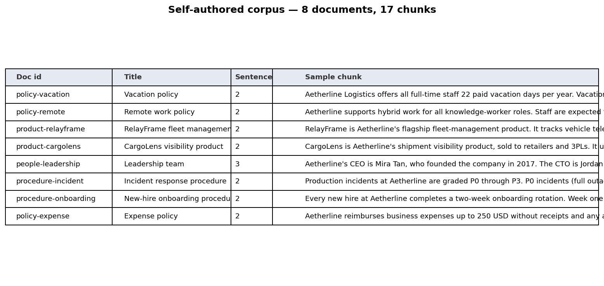
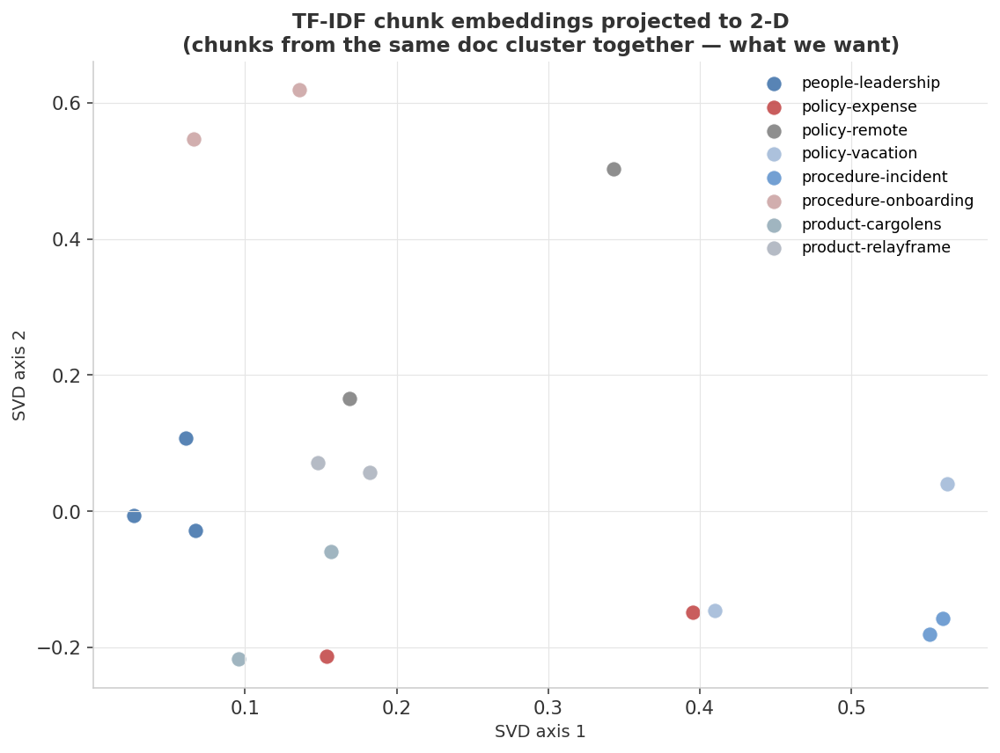
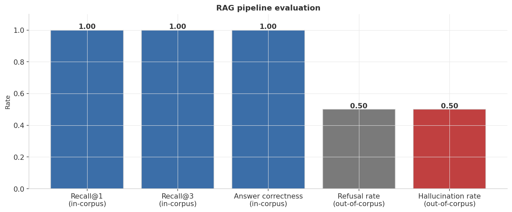
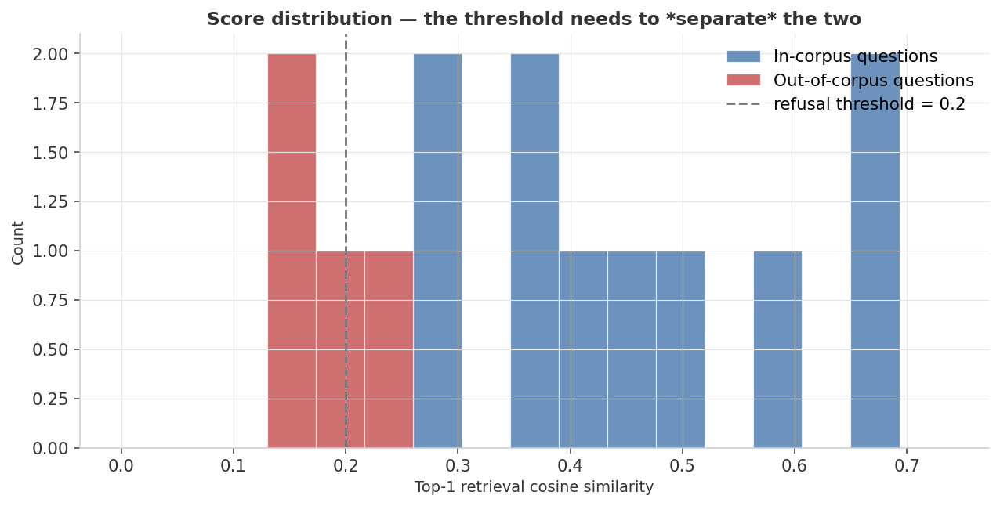

1.00
Recall@1
In-corpus · 10 questions
1.00
Recall@3
In-corpus · 10 questions
0.50
Out-of-corpus refusal rate
Weak spot · 50% hallucination
Retrieval & honesty scorecard
| Group | Metric | Value |
|---|---|---|
| In-corpus | Recall@1 | 1.00 |
| In-corpus | Recall@3 | 1.00 |
| In-corpus | Answer correctness | 1.00 |
| Out-of-corpus | Refusal rate | 0.50 |
| Out-of-corpus | Hallucination rate | 0.50 |
● navy/blue = good (in-corpus) ● orange = attention (out-of-corpus) · values from
results/metrics.jsonHeadline finding: the retriever is perfect on questions whose answers exist in the corpus — Recall@1 and Recall@3 both hit 1.00. The honest weak spot is the 50% hallucination rate on out-of-corpus questions. TF-IDF cosine similarity isn't a sharp enough signal to reliably distinguish "no relevant content" from "marginally relevant content." This is the single most important production-RAG problem, and it's visible right here on a 14-question evaluation.
Visual diagnostics
1 · The corpus — 8 documents, 17 chunks
8 short documents about the invented company Aetherline Logistics. Every fact is self-authored, giving complete ground truth over which doc answers each question.

2 · TF-IDF chunk embeddings (2-D SVD projection)
Chunks from the same document cluster together. Product docs land on the right; procedure and people docs cluster on the left — qualitative groupings are visible even with only 17 chunks.

3 · RAG pipeline evaluation
Five metrics on one plot: in-corpus recall and correctness all hit 100%; refusal rate on out-of-corpus questions sits at 50%.

4 · Score histogram — why hallucination happens
The two distributions overlap around the 0.20 threshold. Out-of-corpus questions with overlapping vocabulary score above the refusal threshold — TF-IDF can't detect missing meaning.

Metric definitions
In-corpus metrics (10 questions)
All computed over questions where a ground-truth relevant document exists.
| Metric | Definition | Reads as |
|---|---|---|
| Recall@1 | Fraction where top-1 chunk comes from the correct doc | 1 = perfect top-1 retrieval |
| Recall@3 | Fraction where correct doc appears in top-3 results | Always ≥ Recall@1; 1 = correct doc always in top-3 |
| Answer correctness | Extracted sentence source matches truth doc and not refused | Stricter than Recall@1; sentence-selection pass must also route correctly |
Out-of-corpus metrics (4 questions)
Computed over questions where refusal is the correct action (no answer exists in the corpus).
| Metric | Definition | Reads as |
|---|---|---|
| Refusal rate | Fraction of out-of-corpus questions where top-1 cosine < threshold τ = 0.20 | 0.50 = half correctly refused; half hallucinated |
| Hallucination rate | 1 − refusal rate | Fraction where system answered instead of refusing |
No MRR or nDCG: with a single canonical answer document per question and only 17 chunks, Recall@k is the appropriate and sufficient metric. MRR/nDCG add meaningful signal only when ground-truth relevance has graded values or multiple relevant documents.
Full results
| Slice | Metric | Value |
|---|---|---|
| In-corpus (10 questions) | Recall@1 | 1.0 |
| In-corpus (10 questions) | Recall@3 | 1.0 |
| In-corpus (10 questions) | Answer correctness | 1.0 |
| Out-of-corpus (4 questions) | Refusal rate | 0.5 |
| Out-of-corpus (4 questions) | Hallucination rate | 0.5 |
Pipeline parameters:
k = 3, refuse_threshold = 0.20 · values from results/metrics.json · fully deterministic — no random seed neededRun it yourself
# 1. environment python3 -m venv .venv && source .venv/bin/activate pip install -r requirements.txt # 2. generate the corpus + questions (deterministic — no seed needed) python generate_data.py # 3. build retriever, run evaluation, render figures python train.py
Produces the four PNGs in
assets/ and the metric summary in results/metrics.json. Wall-time: ~3 seconds. No model training — this is pure information retrieval.Tweak the difficulty
QUESTIONS = [
{"q": "How many vacation days do full-time staff get per year?",
"doc_id": "policy-vacation", "out_of_corpus": False},
...
{"q": "What is Aetherline's stock ticker?",
"doc_id": None, "out_of_corpus": True}, # adversarial: no answer in corpus
]
Add out-of-corpus questions whose vocabulary overlaps with the corpus (e.g.,
"How many CargoLens shipments are tracked monthly?") and watch the hallucination rate climb above 50%.